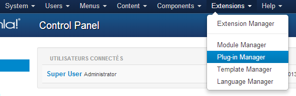

This plugin is automatically installed with AdsManager.
First, you need to enable the plugin in the plugin manager of Joomla.

This plugin allows users to post comments on ad detail pages.
The plugin requires JComments component to work.
Note: The JComments Component does not work on Joomla! 3.0.